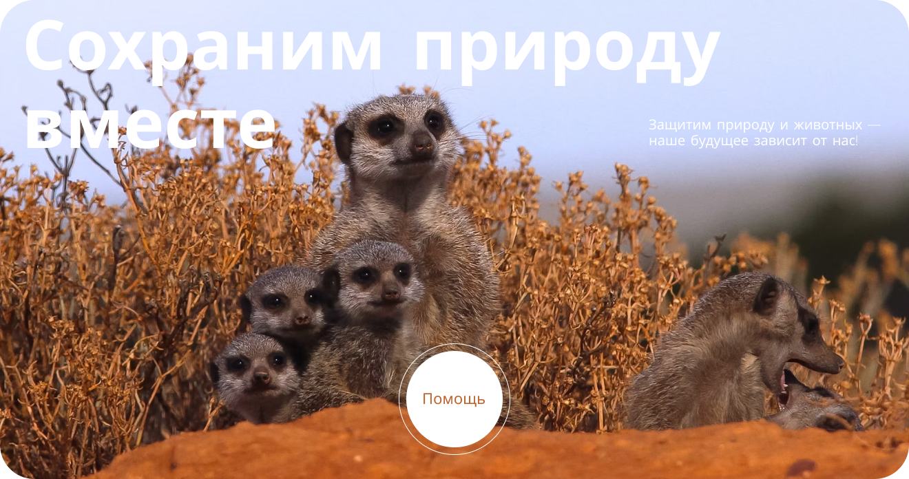
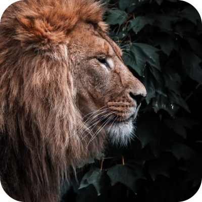
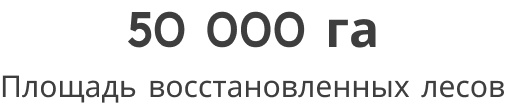
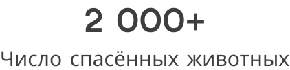
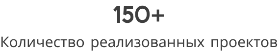
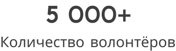
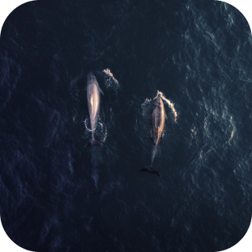
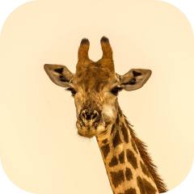
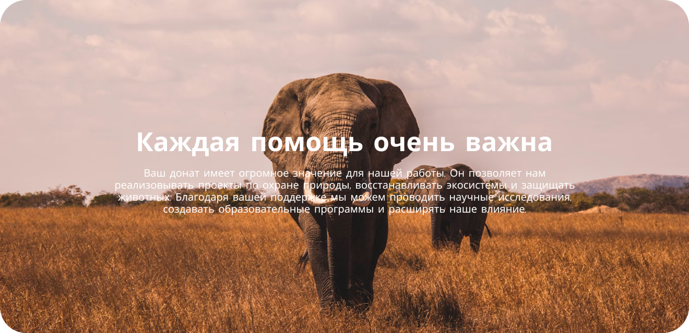

- Наша миссия — охранять и восстанавливать природные экосистемы обеспечивая устойчивое будущее для планеты и её обитателей.
- Мы стремимся создавать и поддерживать инициативы, направленные на
- сохранение биоразнообразия, минимизацию экологического воздействия
- и повышение осведомленности общественности о важности защиты
- окружающей среды. Работая совместно с партнёрами и местными
- сообществами, мы обеспечиваем долговременное сохранение планеты и
- её уникальных экосистем для будущих поколений.







Как мы работаем?
Для нас самое главное — сохранение и восстановление природных экосистем, защита дикой природы и поддержание биоразнообразия, чтобы обеспечить устойчивое будущее для планеты и её обитателей.
- Разрабатываем проекты по охране окружающей среды
- Проводим научные исследования экосистем
- Организуем программы по защите природы
- Работаем с бизнесом для эффективных решений
- Привлекаем волонтёров для участия в проектах
- Обеспечиваем финансирование через пожертвования
- Регулярно публикуем отчёты о деятельности
